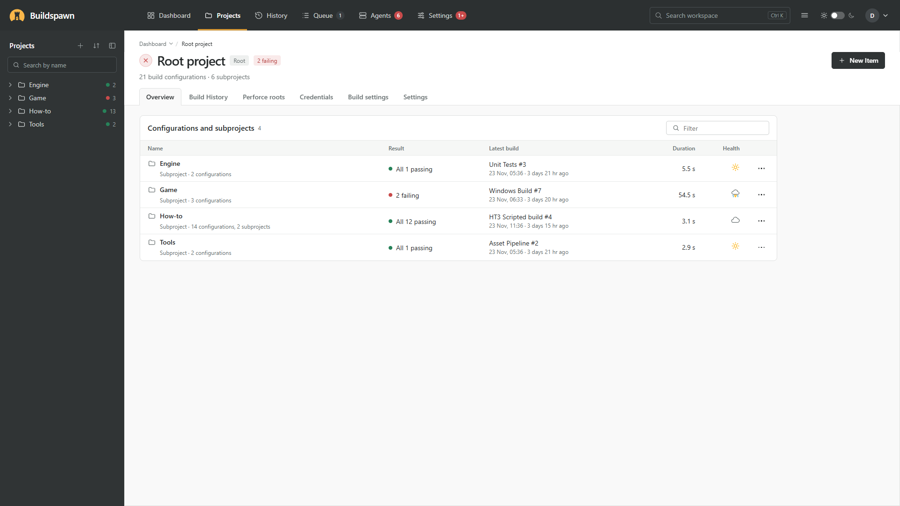
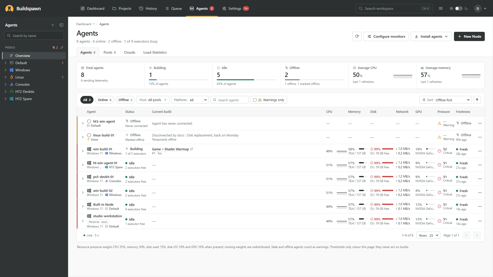
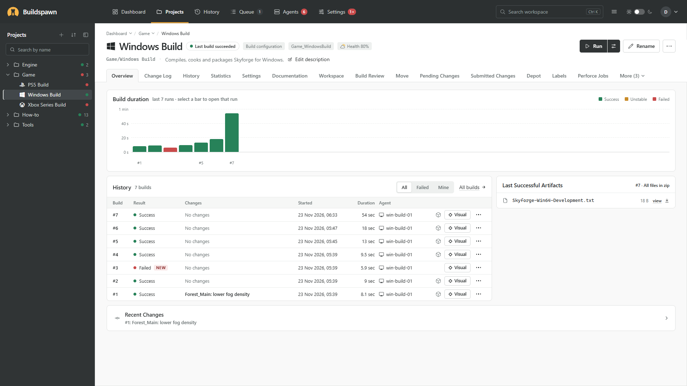

A tour of the interface
Every Buildspawn page has the same three parts: the top bar, the sidebar and the page itself. Learn them once and you can find anything.

The top bar
The dark bar at the top is always there. From left to right:
| Item | What it does |
|---|---|
| Logo | Takes you back to the start page. |
| Dashboard | Widgets with the builds, failures, queue and agents your team should see first. An administrator arranges it. See The Dashboard. |
| Projects | All projects and build configurations, with their latest results. See The project directory. |
| History | Every build that ran, newest first, with a timeline by agent and the filters All, Failed, Running and Mine. See History. |
| Queue | Builds that wait for a free agent. The number shows how many wait now. See The queue. |
| Agents | The build machines, their pools and live telemetry. A red number counts agents that are offline or disconnected. |
| Settings | Server administration: users, security, tools, plugins and more. A red number counts notices that need an administrator, for example a certificate that is about to expire. |
| Search workspace | Finds projects, build configurations, builds, agents and settings pages by name. Press Ctrl + K to jump to it from anywhere. |
| Actions menu | The three-line button beside the theme switch holds extra actions for the page you are on. |
| Light / dark switch | Switches between the light and the dark theme. Your choice is saved with your account. |
| Account menu | The round button with your initial. It opens Profile, My changes, Account (password and API tokens), Appearance and Sign out. If an administrator allows personal machines and you may use them, My machines is here too. |
The sidebar
The panel on the left changes with the page you are on. On the Projects, Dashboard and build pages it shows the project tree.
- Click the arrow beside a project to open it and see what is inside. The coloured dot after each name is its latest result: green passed, red failed, blue running. The number counts the build configurations inside.
- Type in Search by name to filter the tree.
- The three buttons beside the title: New Item (+) creates a project or build configuration, Reorder mode lets administrators drag items into their own order, and the last one hides the panel. Everyone sees the order administrators choose. Administrators can also add named separators to group items.
Make the sidebar wider or narrower
Drag the right edge of the sidebar. The width can go from 200 pixels to half of the window. Your width is remembered in your browser. Double-click the edge to reset it. With the keyboard, press Tab until the edge has focus, then use the arrow keys (hold Shift for bigger steps).
On the Agents page the same panel lists the agent pools, and on the Settings page it lists the settings sections.

Pages and tabs
Most pages follow the same pattern:
- A breadcrumb at the top shows the path, for example Dashboard › Game › Windows Build. Click any part to go up. The small arrow beside a part opens a menu of its neighbours.
- The title with the status chips and the main actions on the right, such as Run.
- Tabs for the parts of the page. More holds the tabs that don't fit.
A build configuration always starts with the same five tabs, whatever else it has: Overview, Change Log, History, Statistics and Settings. Tabs from plugins, such as Perforce pages, come after them.

Words you will see
| Word | Meaning |
|---|---|
| Project | A folder that groups build configurations and other projects, and passes its settings down. |
| Build configuration | One kind of build, with its steps, triggers and settings. |
| Build | One run of a build configuration, with a number such as #7. |
Themes
Click the light / dark switch in the top bar to change the theme. More options are under Settings › Appearance. See Appearance and themes.